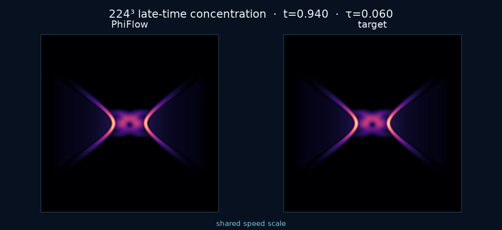
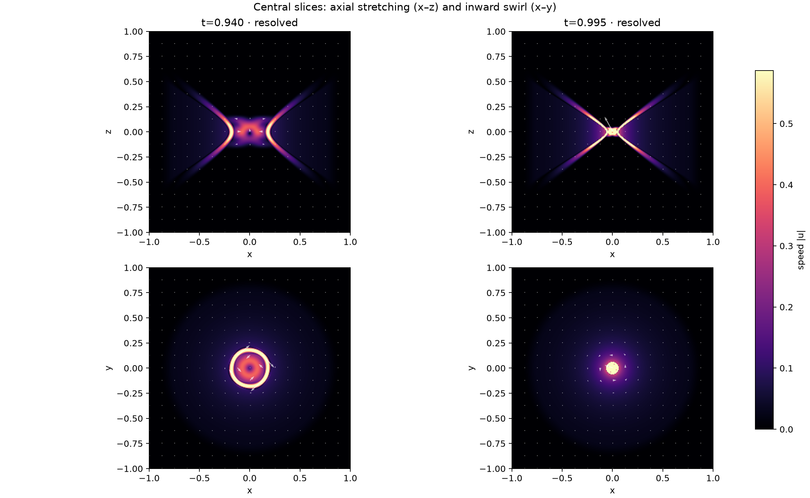

Active numerical experiment
How close can a finite solver get?
A reproducible PhiFlow experiment following the geometry of OpenAI’s Navier–Stokes construction—from exact rest toward a concentrating vortex at t* = 1.
Flow field
Watch concentration sharpen
The MP4 preserves detail; the matching GIF is optimized for quick sharing and review in issues and pull requests.
224³ · t 0.94 → 0.995
Computed field versus target
Late-time concentration remains geometrically resolved at the endpoint, while the shared scale makes tracking differences visible.
{kind=link}

Shareable GIF
The same best trajectory, inline
A compact version of the computed-versus-target sequence for discussion, embedding, and reproducible result review.

Current best · 288³
Highest verified endpoint
At t=0.995, the run retains 5.29 radial cells across the core and 0.463% of energy in the top spectral third.
Current-best evidence
Three checks before interpretation
Loading the current-best record…
5.29 radial cells
The concentrating scale remains above the declared four-cell cutoff.
0.463% tail energy
The top Fourier third is occupied but not dominating the endpoint.
1.03 × 10⁻¹³ divergence
The periodic FFT projection preserves incompressibility near roundoff.
The public page stays focused. Read the full run history and controls →
Reproduction roadmap
What is real, and what remains
Implemented
Exact discrete incompressibility, implicit similarity coordinates, three-region geometry, rest interval, smooth activation, two annular wave surrogates, projected RK2, and FFT pressure projection.
Measured
Grid coverage, Fourier occupancy, tracking, vorticity, energy, force derivatives, balance residuals, and full-state timestep differences across independent Mac trajectories.
Open work
Replace hand-shaped profiles with the paper’s profile ODEs, add stress-matched finite correction hierarchies, and demonstrate joint convergence in grid, timestep, pulse frequency, and truncation order.
Propose an experiment →Open collaboration
Bring a solver, proof detail, or skeptical test.
The most valuable contribution is one that can fail clearly. Every proposed result should identify its resolution gate, refinement path, and alternative explanation.
Contribution guide